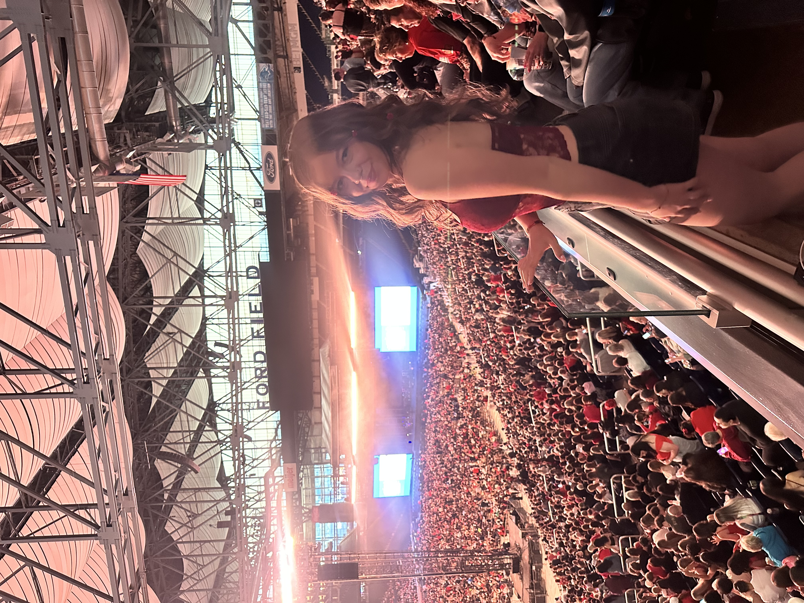

Soph in Stereo
A CONCERT ARCHIVE
the nights, music, and memories in between
A CONCERT ARCHIVE
the nights, music, and memories in between
There is something special about live music. The feeling of standing in a crowd, singing along to your favourite songs, and sharing moments with thousands of people who feel the exact same way. Soph in Stereo is a collection of the concerts, artists, and unforgettable memories that have become part of my story.
